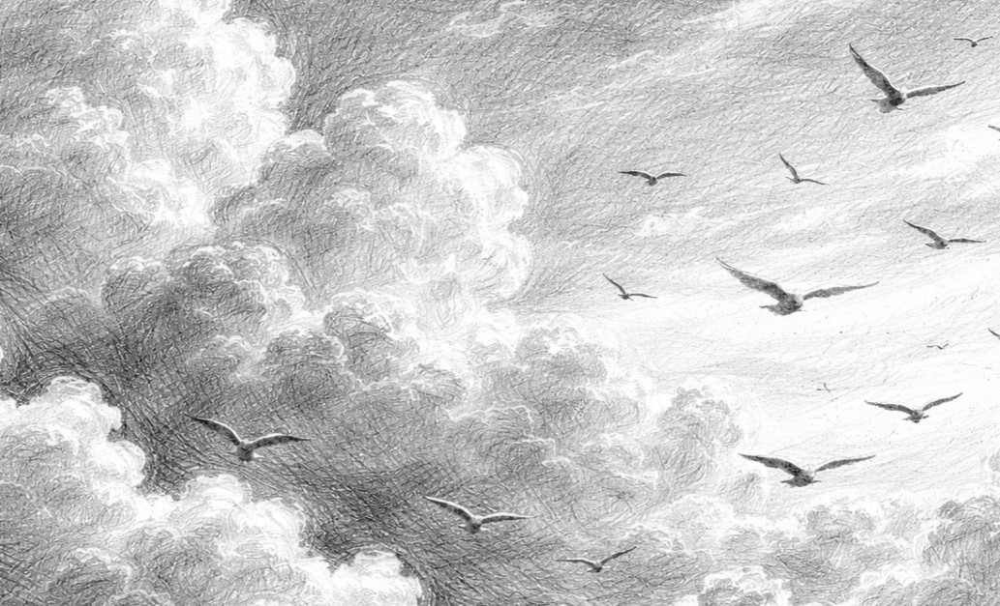

Bagiku, bandara bukan lagi sekadar tempat perlintasan. Ia adalah museum ingatan yang setiap sudutnya menyimpan sisa-sisa tawamu. Lorong menuju gate itu kini terasa lebih panjang dari biasanya, seolah tiap ubin yang kupijak sedang membisikkan langkah-langkah kita yang dulu pernah seirama. Aku seringkali terdiam di depan kaca jendela, menatap landasan pacu sembari mengingat saat kita duduk bersisian di kursi pesawat. Kita pernah seperti menjadi dua anak kecil yang takjub merekam awan, tertawa dalam volume kecil agar tak mengganggu dunia, dan larut dalam permainan game yang kita ciptakan yang kini aturannya pun sudah terlupakan. Dari sudut kamera ponselku, siluet wajahmu yang kuambil diam-diam untuk kado ulang tahunmu waktu itu.
Perpisahan di bandara sore itu adalah sebuah perasaan yang sunyi. Aku masih ingat bagaimana punggungmu menjauh, perlahan mengecil di antara kerumunan. Sekali kamu menoleh, memberikan tatapan terakhir yang sulit kuartikan, sebelum akhirnya benar-benar melangkah pergi. Mungkin, semesta sedang memberitahuku lewat punggung yang menjauh itu, bahwa keberangkatanmu kali ini tidak memiliki jadwal kepulangan.
Di antara ribuan orang yang pergi dan datang, hanya satu orang yang paling ingin kutunggu, namun ia telah memilih untuk menjadi awan—indah, namun tak lagi bisa kugapai.